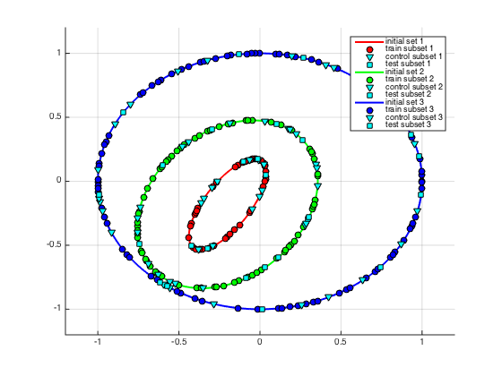
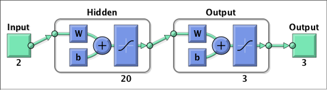
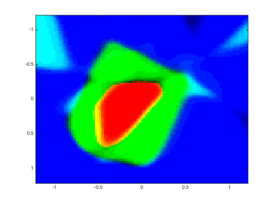
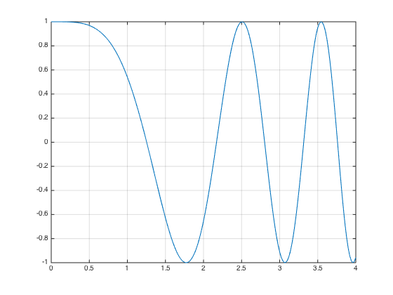
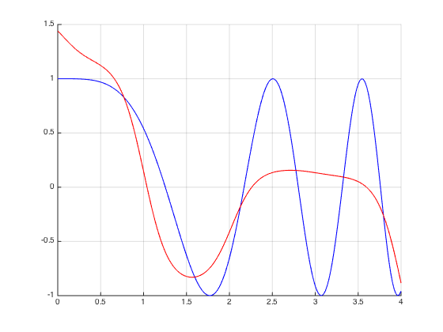
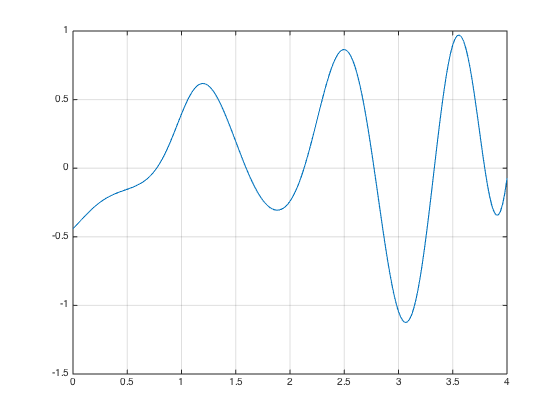

Contents
PART 1
clear;
clc;
t_range = 0 : 0.025 : 2 * pi;
X1 = ellipse(t_range, 0.4, 0.15, -0.2, -0.18, pi / 3);
P1 = X1(:, randperm(numel(t_range), 60));
T1 = [ones(1, 60); zeros(1, 60); zeros(1, 60)];
X2 = ellipse(t_range, 0.7, 0.5, -0.2, -0.18, pi / 3);
P2 = X2(:, randperm(numel(t_range), 100));
T2 = [zeros(1, 100); ones(1, 100); zeros(1, 100)];
X3 = ellipse(t_range, 1, 1, 0, 0, 0);
P3 = X3(:, randperm(numel(t_range), 120));
T3 = [zeros(1, 120); zeros(1, 120); ones(1, 120)];
[trainInd1,valInd1,testInd1] = dividerand(60, .7, .2, .1);
[trainInd2,valInd2,testInd2] = dividerand(100, .7, .2, .1);
[trainInd3,valInd3,testInd3] = dividerand(120, .7, .2, .1);
figure;
hold on;
plot(X1(1, :), X1(2, :), '-r', 'LineWidth', 2);
plot(P1(1, trainInd1), P1(2, trainInd1), 'or', 'MarkerEdgeColor', 'k', 'MarkerFaceColor', 'r', 'MarkerSize', 7);
plot(P1(1, valInd1), P1(2, valInd1), 'rV', 'MarkerEdgeColor', 'k', 'MarkerFaceColor', 'c', 'MarkerSize', 7);
plot(P1(1, testInd1), P1(2, testInd1), 'rs', 'MarkerEdgeColor', 'k', 'MarkerFaceColor', 'c', 'MarkerSize', 7);
plot(X2(1, :), X2(2, :), '-g', 'LineWidth', 2);
plot(P2(1, trainInd2), P2(2, trainInd2), 'og', 'MarkerEdgeColor', 'k', 'MarkerFaceColor', 'g', 'MarkerSize', 7);
plot(P2(1, valInd2), P2(2, valInd2), 'gV', 'MarkerEdgeColor', 'k', 'MarkerFaceColor', 'c', 'MarkerSize', 7);
plot(P2(1, testInd2), P2(2, testInd2), 'gs', 'MarkerEdgeColor', 'k', 'MarkerFaceColor', 'c', 'MarkerSize', 7);
plot(X3(1, :), X3(2, :), '-b', 'LineWidth', 2);
plot(P3(1, trainInd3), P3(2, trainInd3), 'ob', 'MarkerEdgeColor', 'k', 'MarkerFaceColor', 'b', 'MarkerSize', 7);
plot(P3(1, valInd3), P3(2, valInd3), 'bV', 'MarkerEdgeColor', 'k', 'MarkerFaceColor', 'c', 'MarkerSize', 7);
plot(P3(1, testInd3), P3(2, testInd3), 'bs', 'MarkerEdgeColor', 'k', 'MarkerFaceColor', 'c', 'MarkerSize', 7);
legend('initial set 1', 'train subset 1', 'control subset 1', 'test subset 1',...
'initial set 2', 'train subset 2', 'control subset 2', 'test subset 2',...
'initial set 3', 'train subset 3', 'control subset 3', 'test subset 3');
axis([-1.2 1.2 -1.2 1.2]);
grid on;

Ptrain = [P1(:, trainInd1) P2(:, trainInd2) P3(:, trainInd3)];
Ttrain = [T1(:, trainInd1) T2(:, trainInd2) T3(:, trainInd3)];
ntrain = size(Ptrain, 2);
Pval = [P1(:, valInd1) P2(:, valInd2) P3(:, valInd3)];
Tval = [T1(:, valInd1) T2(:, valInd2) T3(:, valInd3)];
nval = size(Pval, 2);
Ptest = [P1(:, testInd1) P2(:, testInd2) P3(:, testInd3)];
Ttest = [T1(:, testInd1) T2(:, testInd2) T3(:, testInd3)];
ntest = size(Ptest, 2);
P = [Ptrain Pval Ptest];
T = [Ttrain Tval Ttest];
net = feedforwardnet(20, 'trainrp');
net = configure(net, [-1.2 1.2; -1.2 1.2], [0 1; 0 1; 0 1]);
net.layers{2}.transferFcn = 'tansig';
view(net);
net.divideFcn = 'divideind';
net.divideParam.trainInd = 1 : ntrain;
net.divideParam.valInd = ntrain + 1 : ntrain + nval;
net.divideParam.testInd = ntrain + nval + 1 : ntrain + nval + ntest;
net = init(net);
net.trainParam.epochs = 1500;
net.trainParam.max_fail = 1500;
net.trainParam.goal = 10e-5;
disp(net.trainParam.goal);
net = train(net, P, T);
[X, Y] = meshgrid(-1.2 : 0.025 : 1.2, 1.2 : -0.025 : -1.2);
n = length(X);
out = sim(net, [X(:)'; Y(:)']);
out = max(0, min(1, out));
out = round(out * 10) * 0.1;
ctable = unique(out', 'rows');
cmap = zeros(n, n);
for i = 1 : size(ctable, 1)
cmap(ismember(out', ctable(i, :), 'rows')) = i;
end
image([-1.2, 1.2], [-1.2, 1.2], cmap);
colormap(ctable);
1.0000e-04
 
PART 2
t0 = 0;
tn = 4;
dt = 0.02;
n = (tn - t0) / dt + 1;
func = @(t) cos(t .^ 2);
x = func(t0 : dt : tn);
plot(t0:dt:tn, x), grid;

net = feedforwardnet(5, 'trainbfg');
net = configure(net, t0 : dt : tn, x);
trainInd = 1 : floor(n * 0.9);
valInd = floor(n * 0.9) + 1 : n;
testInd = [];
net.divideFcn = 'divideind';
net.divideParam.trainInd = trainInd;
net.divideParam.valInd = valInd;
net.divideParam.testInd = testInd;
net = init(net);
net.trainParam.epochs = 600;
net.trainParam.max_fail = 600;
net.trainParam.goal = 10e-8;
net = train(net, t0 : dt : tn, x);
y = sim(net, t0 : dt : tn);
sqrt(mse(x(trainInd) - y(trainInd)))
sqrt(mse(x(valInd) - y(valInd)))
figure;
hold on;
plot(t0 : dt : tn, x, '-b');
plot(t0 : dt : tn, y, '-r');
grid on;
figure;
plot(t0 : dt : tn, x - y);
grid on;
ans =
0.5072
ans =
0.4623
 